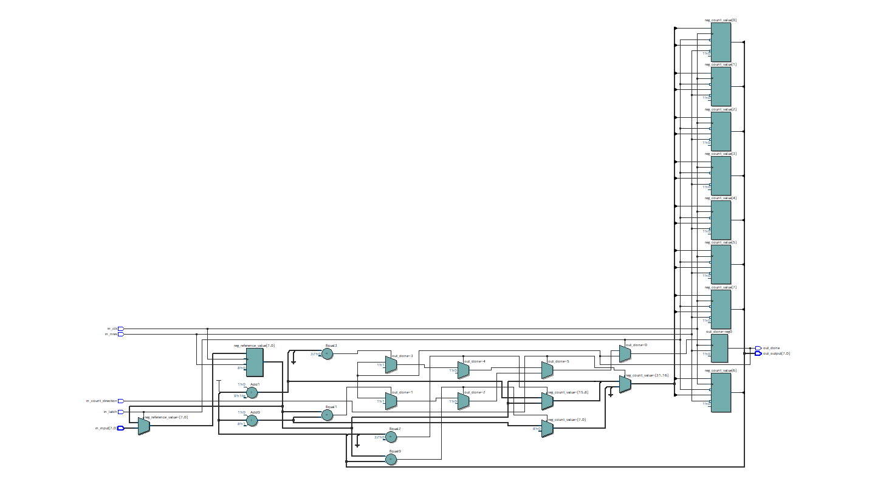
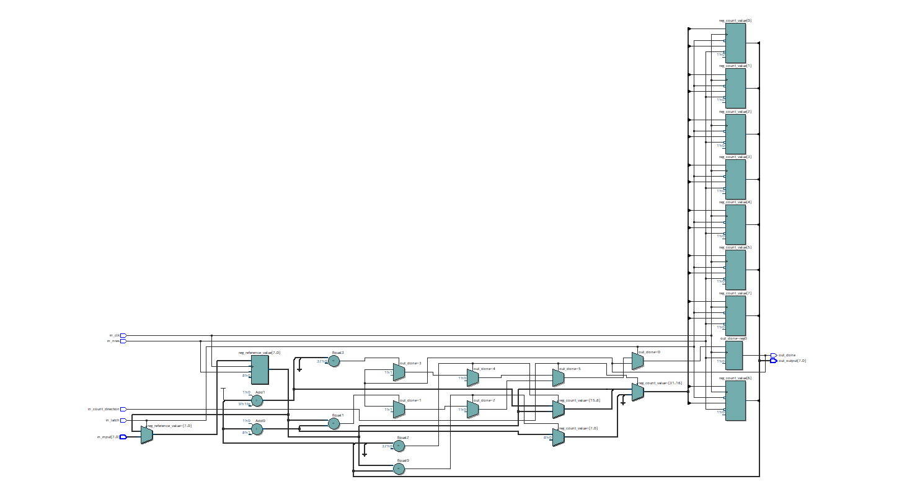
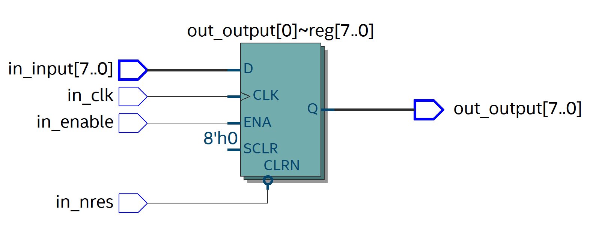
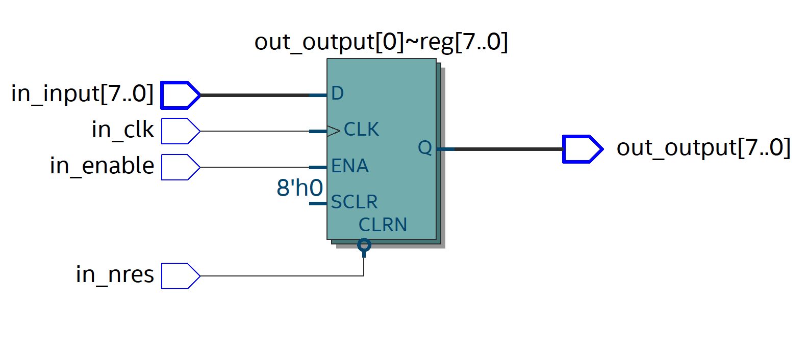
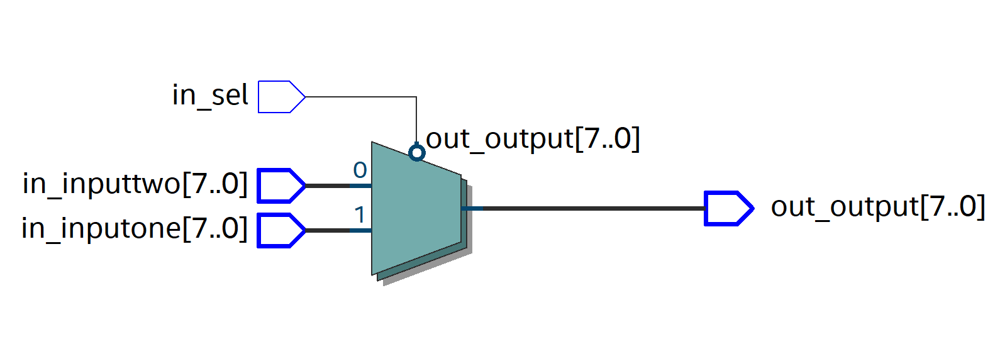
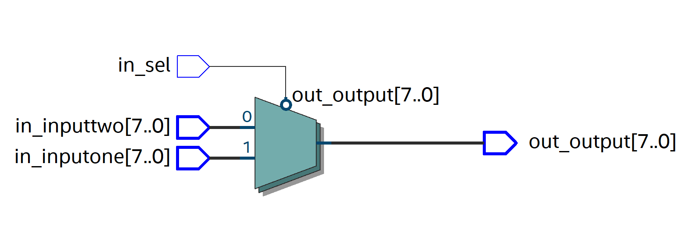

My projects with Verilog
PWM Controller
This design operates with an 8-bit counter that toggles between "1" and "0" using a 2-input multiplexer.
To change the frequency of the PWM output, you can latch a new value into the counter and reset the device for the changes to take effect.
Up/Down Counter
This is a simple up/down counter with preload capability.
You can preload a value into the counter, and it will count up to that value starting from zero, or count down from that value to zero, depending on the direction input setting. 
You can preload a value into the counter, and it will count up to that value starting from zero, or count down from that value to zero, depending on the direction input setting. 
n-bit register
This is a register where you can specify the width.
It can be 64 bits, 32 bits, 16 bits, 8 bits, 4 bits, 2 bits, or 1 bit wide—but not half a bit! 
It can be 64 bits, 32 bits, 16 bits, 8 bits, 4 bits, 2 bits, or 1 bit wide—but not half a bit! 
2x1 Mux
This is a simple 2x1 multiplexer where you can specify both the input and output width.
When in_sel is low (0), the first input is selected. When in_sel is high (1), the second input is selected. 
When in_sel is low (0), the first input is selected. When in_sel is high (1), the second input is selected. 